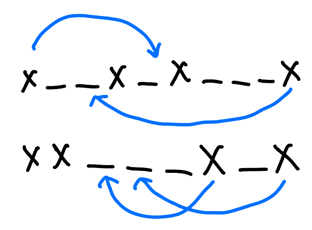
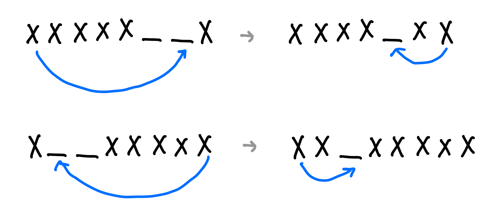
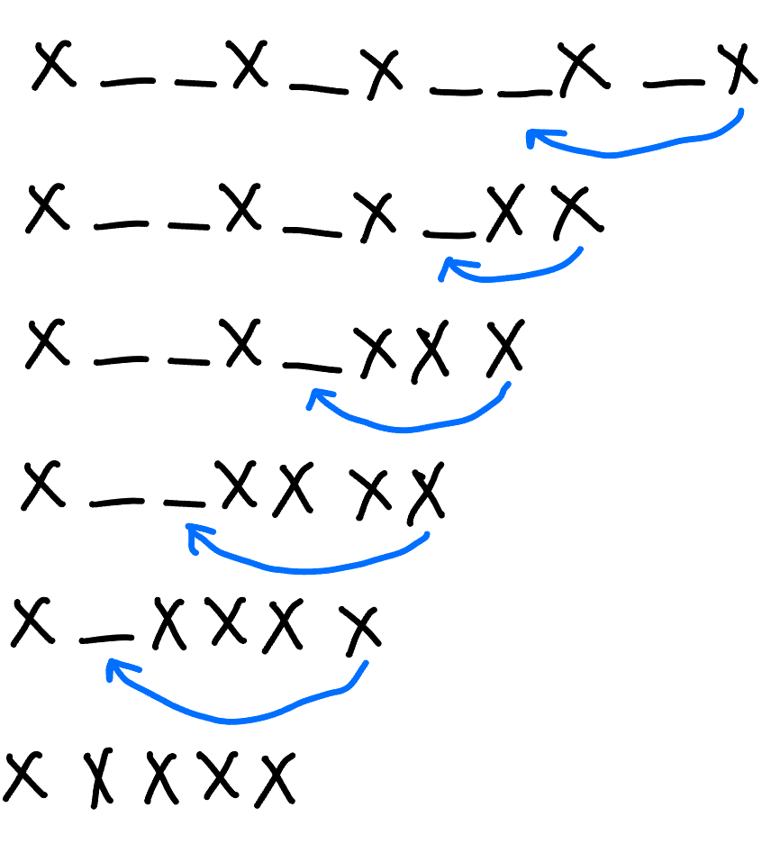
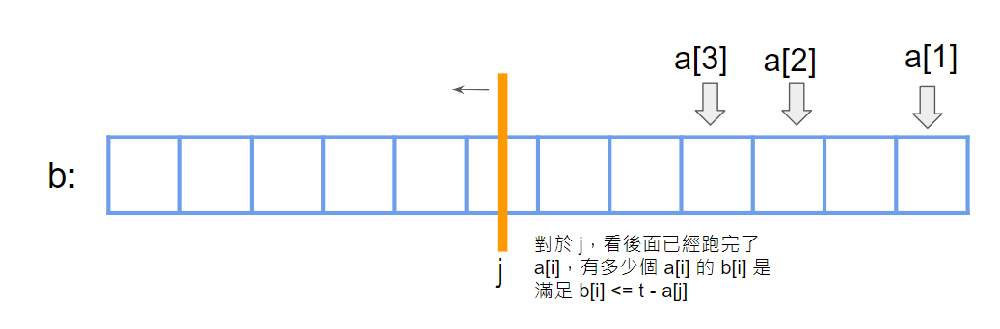

雙指針
CSES - Sum of Two Values 給一個長度為 n 的序列 \(a_1, \ldots ,a_n\) ，以及數字 x，問這 n 個數字中哪兩個數字和為 x，輸出任何一組解
\(n\le 2\times 10^5, 1\le x,a_i\le 10^9\)
思路
排序後使用雙指針
code
void solve () {
vector < pair < int , int >> v ;
int n , x ;
cin >> n >> x ;
for ( int i = 1 ; i <= n ; i ++ ) {
int x ;
cin >> x ;
v . push_back ({ x , i });
}
sort ( v . begin (), v . end ());
int l = 0 , r = n - 1 ;
while ( r > l ) {
if ( v [ l ]. first + v [ r ]. first > x ) {
r -- ;
} else if ( v [ l ]. first + v [ r ]. first < x ) {
l ++ ;
} else {
cout << v [ l ]. S << ' ' << v [ r ]. S << endl ;
exit ( 0 );
}
}
cout << "IMPOSSIBLE \n " ;
}
CSES - Sum of Three Values 給一個長度為 n 的序列 \(a_1, \ldots ,a_n\) ，以及數字 x，問這 n 個數字中哪三個數字和為 x，輸出任何一組解
\(n\le 5000, 1\le x, a_i\le 10^9\)
思路
枚舉第一項，後續套用 Sum of Two Values
Sum of Two values 變化
給一個長度為 n 的序列 \(a_1, \ldots ,a_n\) ，以及數字 x，問有幾組 (i, j) 使 \(a_i+a_j=x\)
\(n\le 2\times 10^5, 1\le x, a_i\le 10^9\)
思路
開一個桶 cnt[ ] 紀錄每種數字出現的次數，然後我們就可以將 a[ ] sort，並使用 unique 去除重複的元素，然後用雙指針（枚舉 l，r 會單調遞減）
code
int j = n - 1 ;
for ( int i = 0 ; i < n ; i ++ ) {
while ( i < j && a [ i ] + a [ j ] >= x ) {
if ( a [ i ] + a [ j ] == x ) {
ans += cnt [ i ] * cnt [ j ];
}
j -- ;
}
}
USACO 2021 December Contest, Silver Problem 2. Connecting Two Barns 給 \(n\) 點 \(m\) 邊，點邊號 \(1\ldots n\) ，可以額外建最多兩條邊，在點 \(i,j\) 之間建邊花費 \((i-j)^2\) ，問最小花費使點 \(1\) 跟點 \(n\) 連通
\(n,m\le 10^5\)
思路
對於 1 和 n 有兩種情況:
在同一個連通塊裡。
在兩個不同的連通塊裡。
接下來用 f[i] 來表示 i 所在的連通塊的代表點。對於情況 1，很明顯不需要連任何一邊，所以花費為 0。對於情況 2，一定是一個在 f[1]，連到中間的連通塊 f[i]，再從 f[i] 連到 f[n]。我們去預處理 f[1] 到 f[i] 的最近距離，存在 cost1[f[i]]，也去去預處理 f[i] 到 f[n] 的最近距離，存在 costn[f[i]]。最後的答案就是 cost1[i] + costn[n] 取最小值。至於要怎麼預處理有兩種方法，第一種是二分，也就是假設要算 f[i] 到 f[j] 的最小距離，先枚舉 f[i] 內的點，假設叫 k，我們就在 f[j] 內二分第一個比 k 大的數字與第一個比 k 小的數字，取 min 即可。第二種方法是 two pointer，我們去枚舉一個點 i，對於這個 i 一定是想要選數值越接近自己的點越好，假設現在是看到 f[1] 的距離，就是用 two pointer 維護在 f[1] 第一個比 i 大的數字與第一個比 i 小的數字（見代碼 line 54 ~ 72），最後把這個更新在 cost1[f[i]] 即可。
講不清楚可以參考官方詳解
code(from usaco)
#include <algorithm>
#include <iostream>
#include <numeric>
#include <vector>
using namespace std ;
void dfs ( const vector < vector < int >> & G , vector < int > & cc , const int u , const int id ) {
for ( int v : G [ u ]) {
if ( cc [ v ] != id ) {
cc [ v ] = id ;
dfs ( G , cc , v , id );
}
}
}
void solve () {
int n , m ;
cin >> n >> m ;
vector < vector < int >> G ( n );
for ( int i = 0 ; i < m ; i ++ ) {
int a , b ;
cin >> a >> b ;
a -- ;
b -- ;
G [ a ]. push_back ( b );
G [ b ]. push_back ( a );
}
vector < int > cc ( n );
iota ( cc . begin (), cc . end (), 0 );
for ( int i = 0 ; i < n ; i ++ ) {
if ( cc [ i ] == i ) {
dfs ( G , cc , i , i );
}
}
if ( cc [ 0 ] == cc [ n - 1 ]) {
cout << "0 \n " ;
return ;
}
vector < vector < int >> st ( n );
for ( int i = 0 ; i < n ; i ++ ) {
st [ cc [ i ]]. push_back ( i );
}
long long ans = 1e18 ;
vector < long long > cost1 ( n , 1e9 );
vector < long long > costn ( n , 1e9 );
int idx1 = 0 ;
int idxn = 0 ;
for ( int i = 0 ; i < n ; i ++ ) {
while ( idx1 < st [ cc [ 0 ]]. size ()) {
cost1 [ cc [ i ]] = min ( cost1 [ cc [ i ]], ( long long ) abs ( i - st [ cc [ 0 ]][ idx1 ]));
if ( st [ cc [ 0 ]][ idx1 ] < i ) {
idx1 ++ ;
} else {
break ;
}
}
if ( idx1 ) idx1 -- ;
while ( idxn < st [ cc [ n - 1 ]]. size ()) {
costn [ cc [ i ]] = min ( costn [ cc [ i ]], ( long long ) abs ( i - st [ cc [ n - 1 ]][ idxn ]));
if ( st [ cc [ n - 1 ]][ idxn ] < i ) {
idxn ++ ;
} else {
break ;
}
}
if ( idxn ) idxn -- ;
}
for ( int i = 0 ; i < n ; i ++ ) {
ans = min ( ans , cost1 [ i ] * cost1 [ i ] + costn [ i ] * costn [ i ]);
}
cout << ans << " \n " ;
}
int main () {
ios_base :: sync_with_stdio ( false );
cin . tie ( NULL );
int t ;
cin >> t ;
for ( int i = 0 ; i < t ; i ++ ) {
solve ();
}
return 0 ;
}
USACO 2013 JAN Cow Lineup G 有 n 頭牛排成一列，其中第 i 個的品種是 a[i]。只能刪掉至多 k 種品種的情況下，問品種相同的連續段的最大長度
\(n\le 10^5, a_i \le 10^9\)
思路
可以把題目看成: 對於每個有 k + 1 種品種的 subarray，問同種種類最多可以是多少。
最暴力的想法就是枚舉右界 r，然後暴力的找到 l 使 [l, r] 恰有 k + 1 種品種，用 r 的品種來更新答案。但我們可以發現，這種 subarray 具有單調性，我們可以用 two pointer 維護，詳見代碼。
code
#include <iostream>
#include <map>
using namespace std ;
const int N = 100005 ;
int a [ N ];
int main () {
int n , k ;
cin >> n >> k ;
for ( int i = 1 ; i <= n ; ++ i ) {
cin >> a [ i ];
}
map < int , int > mp ;
int ans = 0 ;
int l = 1 ;
for ( int r = 1 ; r <= n ; ++ r ) {
++ mp [ a [ r ]];
while ( mp . size () > k + 1 ) {
-- mp [ a [ l ]];
if ( mp [ a [ l ]] == 0 ) {
mp . erase ( a [ l ]);
}
++ l ;
}
ans = max ( ans , mp [ a [ r ]]);
}
cout << ans ;
}
USACO 2019 FEB Sleepy Cow Herding S 一維數線上有 n 頭牛，每次只能挪動 edge point（最右邊或最左邊）的牛到任意位置，不過不能使他移動後還是在 edge point，問讓這些牛完全相鄰的最少和最多挪動次數。
\(n\le 10^5\)
思路
對於第一個問題求最小操作次數，由於每一步操作都在佔領空位，而最終狀態為一段包含連續 \(n\) 個位置的區間，所以可以從結果出發，用 two pointer，枚舉這個最終區間的左端點 \(a_i\) ，找到右端點長度 \(a_j\) ，使 \(a_j-a_i+1\le n\) ，這段區間的答案就會是 n - 區間內的牛的數量（將外面的牛都移進來這個區間內），即 n - (i - j + 1)。可以看一下下圖的移動方式。

因為我們 edge point 移動過去之所以合法是因為我們能找到中間的空格，或者是另一端也有 edge point，可以讓牛安心的過去另一端 edge point 的旁邊。如果兩者都沒有，就會是以下兩種特殊情況。如果前 \(n-1\) 個位置緊鄰，而最後一個位置離倒數第二個位置距離大於 \(2\) ，比如 \(1,2,3,4,7\) ，答案應為 \(2\) 。同理，如果後 \(n-1\) 個位置緊鄰，而第一個位置離第二個位置距離大於 \(2\) ，答案也應為 \(2\) 。

因為不能從 edge point 還到 edge point ，所以會比較類似一個區間一直在縮小（一個大的區間縮小成為一個長度為 n 的區間）。由於要讓移動次數越大越好，所以我們要盡量慢慢移動，而收攏的區間一定是越大越好，所以我們可以朝最左邊慢慢收攏過去，或是朝最右邊慢慢收攏過去。假如現在是朝最左邊慢慢收攏過去，我們一開始先將第 n 頭牛移動到區間 [a[1], a[n - 1]] 的最右邊的空格，這樣才不會讓他成為 edge point，然後再來我們就只要計算 [a[1], a[n - 1]] 內空格的數量，就可以得知接下來的操作次數。假如區間是 [l, r]（在這邊 l = a[1], r = a[n - 1]），答案也就是區間長度 - 區間內的牛的數量 + 一開始第 n 頭牛移過去的一次操作 = (r - l + 1) - n + 1。同理朝最右邊慢慢收攏過去就是 l = a[2], r = a[n]。

code
#include <bits/stdc++.h>
using namespace std ;
int n , a [ 100005 ], ans , ans2 ;
int main () {
cin >> n ;
for ( int i = 1 ; i <= n ; i ++ ) {
cin >> a [ i ];
}
sort ( a + 1 , a + n + 1 );
if (( a [ n - 1 ] - a [ 1 ] == n - 2 && a [ n ] - a [ n - 1 ] > 2 ) || ( a [ n ] - a [ 2 ] == n - 2 && a [ 2 ] - a [ 1 ] > 2 )) {
ans = 2 ; // 特判
} else {
int j = 1 , res = 0 ;
for ( int i = 1 ; i <= n ; i ++ ) {
while ( j < n && a [ j + 1 ] - a [ i ] + 1 <= n ) {
j ++ ;
}
res = max ( res , j - i + 1 );
}
ans = n - res ;
}
cout << ans << '\n' ;
cout << max ( a [ n - 1 ] - a [ 1 ], a [ n ] - a [ 2 ]) - n + 2 << '\n' ;
return 0 ;
}
自編題
給一個長度為 \(n\) 的序列，第 \(i\) 項有兩個數值 \((a_i,b_i)\) 。問有幾組 \((i,j)\) 滿足 \(a_i+b_j\le t\) ，注意 \((i,j)\) 跟 \((j,i)\) 是同一種方案。
\(n\le 10^5,1\le a_i,b_i,t\le 10^9\)
思路
我們可以先算出來全部的方法數（包含 \((i,j),(j,i)\) 都算進去），然後再扣掉同時滿足 \(a_i+b_j\le t,a_j+b_i\le t\) 的方案。這種方法數都可以透過下面的方法算出來。我們可以將式子移向寫成 \(b_j\le t-a_i\) ，我們讓 \(a_i\) 從小到大排序，這樣合法的 \(b_j\) 會越來越少。我們將 \(b_j\) 排序好後放在一個陣列，我們枚舉 \(i\) ，因為具有單調性，所以我們可以慢慢拓展滿足 \(b_j\le t-a_i\) 的後綴區間，相當於讓一個掃描線從右邊往左掃過來，在這裡就可以維護全部的方法數（對於每個 i，ans += j）。現在的問題就變成說要怎麼看滿足 \(b_j\le t-a_i\) 的這些 \(b_j\) ，滿足 \(b_i\le t - a_j\) 的有幾個。我們維護一個資料結構 DS，假設目前跑過的 \(i\) 的 \(b_i\) 都已經加入 DS，那每掃過一個 \(b_j\) 要在 DS 內看的就是有幾個 \(b_i\le t - a_j\) 。注意到這樣也會重複計算，不過我們只要扣掉 \(a_i + b_i \le t\) 的這種情況後，就可以將方法數除 2 即可。所以最後答案就是「全部的法數」 - 「重複的方法數（扣掉 a[i] + b[i] <= t） / 2 」。這裡給出一個例子 。

code
#include <bits/extc++.h>
#include <bits/stdc++.h>
using namespace std ;
using namespace __gnu_pbds ;
template < typename T >
using rank_set = tree < T , null_type , less < T > , rb_tree_tag , tree_order_statistics_node_update > ;
struct DS {
rank_set < int > st ;
void insert ( int x ) {
st . insert ( x );
}
int query ( int x ) {
return st . order_of_key ( x + 1 );
}
};
struct Node {
int a , b ;
};
bool cmp_a ( Node x , Node y ) {
return x . a < y . a ;
}
bool cmp_b ( Node x , Node y ) {
return x . b < y . b ;
}
const int MAXN = 1e5 + 5 ;
Node va [ MAXN ], vb [ MAXN ];
signed main () {
int n , t ;
cin >> n >> t ;
for ( int i = 1 ; i <= n ; i ++ ) {
cin >> va [ i ]. a ;
vb [ i ]. a = va [ i ]. a ;
}
for ( int i = 1 ; i <= n ; i ++ ) {
cin >> va [ i ]. b ;
vb [ i ]. b = va [ i ]. b ;
}
DS ds ;
sort ( va + 1 , va + n + 1 , cmp_a );
sort ( vb + 1 , vb + n + 1 , cmp_b );
int j = n , ans1 = 0 , ans2 = 0 ;
for ( int i = 1 ; i <= n ; i ++ ) {
// 枚舉 i, 維護掃描線使 b[j] <= t - a[i]
while ( 1 <= j && vb [ j ]. b > t - va [ i ]. a ) {
// 重複的方法數計算
ans2 += ds . query ( t - vb [ j ]. a );
j -- ;
}
ans1 += j ; // 全部的方法數
ds . insert ( va [ i ]. b );
}
// 最後還每跑到的 j 也要記得結算
while ( 1 <= j ) {
// 重複的方法數計算
ans2 += ds . query ( t - vb [ j ]. a );
j -- ;
}
for ( int i = 1 ; i <= n ; i ++ ) {
if ( va [ i ]. a + va [ i ]. b <= t ) {
ans2 -- ;
}
}
cout << ans1 - ( ans2 / 2 ) << '\n' ;
}
/*
3 5
2 3 4
2 1 3
*/